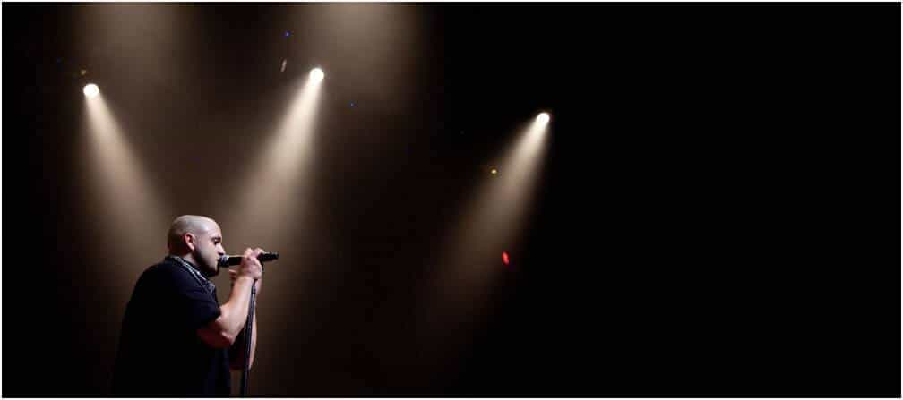
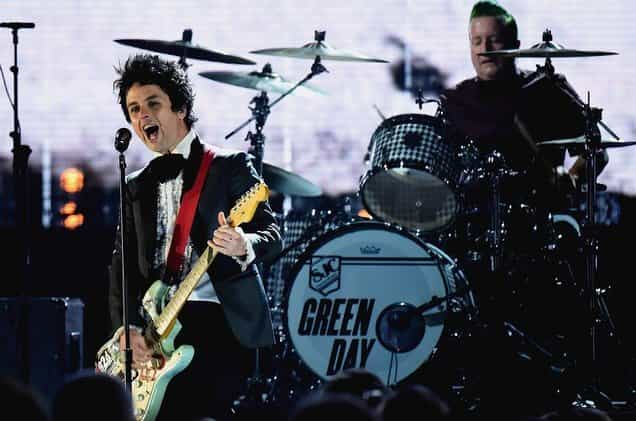

Edgar Tru is a Southern-based objectivist, natural-minded contrarian, and eleutheromania. Follow me on Gab.


I look back on songs from years past and find myself, to some amusement, finding little red pills here and there. I have compiled a list of songs that are red-pilled on leftism, women, and the overall horrors of modern society.

Blue October, fronted by Justin Furstenfeld, is a Texas-based band formed in 1995. If anyone knows anything about the bias nature of family courts, it’d be Mr. Furstenfeld. In 2011 they released a record titled Any Man In America.
This record is possibly one of most saddening records I’ve listened to. The emotions felt through the vocals are believable and the stain on the man’s heart, due to a money-grubbing snake and home-wrecking whore, echoes loud and wide across the sphere where men understand the brutality of a woman’s nature.
She is, by nature, many times more than not, a natural manipulator and seeks resources while giving back little-to-shit in return. That’s been my keen observations, along with utilizing the internet to further that observation. I’m not sure I ever heard a record that touched on family courts and the discrimination against fathers. This is one for the books.
The album has some hard-hitting unapologetic lyrics:
“You don’t know. You act like you believe it, that you’re in control. It’s just your legal system though. Ya, they don’t think about it. No, they don’t care about it. Now every man in America take back your control.”
“Lying ass, play the judge with your crying ass. Had your nose wide open when you saw the cash. Grimy bitch, growing tired of you trying shit. Women run the courts, men provide the chips.”
Very strongly recommend giving the whole album a go-through at least twice.
“I can’t think of one good reason, why I’m always thinking about leaving. It’s not like everything’s so horrible.”
These are the opening lyrics to a song which, quite bluntly, describes how the female sex is seemingly, more times than the contrary, dissatisfied and seeking something more — always craving more, more, more! Now, not to bash into Elizabeth ‘Lzzy’ Hale, but this is a red-pilling song for anyone who has had the heinous experience of dealing with females in an unpleasant fashion.
This idea of trading up seems, from my ever-increasing observations, that a female will split whenever that new guy pops in who ‘raises the bar.’ A woman is never satisfied.

Is the liberal devil truly a hypocrite? No, they simply understand what they want and utilize manipulative tactics to achieve their goals. So, when we hear the lyrics to American Idiot, though a solid record I find, it is laced with the vocals of some post-punk drooling queer-lit buffoon.
“Welcome to a new kind of tension, all across the alien nation. Where everything isn’t meant to be okay. Television dreams of tomorrow, we’re not the ones who’re meant follow. For that’s enough to argue.”
Listen to that song and apply it to our contemporary liberal hellhole, then put it through the eyes of a modern-day post-Bush era right-winger. Very revealing, and a bit humorous given the current state of American politics and how things seem strangely flipped inside out.
“From the town of Detroit where my job is secure, yeah. Secure in the fact that it’s gone for good, yeah. So I’ll scrimp and I’ll scrape at this pension I saved. So it should be gone by the end of the day.”
This song is for the working-man. It makes mark on the struggle through poverty and job loss. This band, led my Irishman Dave King, is a solid piece of work and rings well a sad tune to the struggle of the working class. This band always produces fine content. A band worth exploring, if you haven’t already.
Icon For Hire and their sequel song to Get Well tackles the issue mental illness. The below lyrics display the sentiment that people indulge in their mental problems, or that they’re really emphasizing or faking them for attention. Surely many out there have witnessed this on a few occasions.
“Do you want me to write you another sad song? Would you like that? Do you want me tell you we’ll never belong? Would you like that? Cuz the truth is we’re no different than the others, wearing our sob stories like colors. The truth is we like it, we like it here. We’re better off than we let on I fear.”
In the latter teens of twenty-first century America, it is popular to play the game of victimhood. Being a victim-dweller, while attempting to climb the oppression ladder to success where you earn brownie-points for being supposedly oppressed and discriminated against, is hip and cool.
The lyrics display well the struggle of many people, and especially millennials, in their struggle growing up with depression, suicidal tendencies and things related in this Christ-awful liberalized America.
“Politicians bathing in their greed. No idea how to be all they can be! Have you no honor? Have you no soul? What is it they’re dying for? Do you really even know? Have you no backbone? Have you no spine? Whatever happened to no one gets left behind!”
This song echoes well the mentality of many right-wingers today. Many of us voted for President Trump due to his rhetoric on being anti-war. His two strikes into Syria did not display that rhetoric. Let us hope he does not turn into another Bush-style wardog.
Arch Enemy has put out some fine melodic death metal tunes, with some ruthless female-fronted vocals. The song Revolution Begins echoes an anarchist mentality—a real ‘fuck you’ to your overlords.
“Since the day that you were born, the wheels are in motion. Turning ever faster, play your part in the big machine. The stage is set, the road is chosen. Your fate preordained. We are watching you every step of your way!”
Many may find a hint of George Orwell’s book 1984 in the above lyrics. Perhaps so. Nonetheless, in these modern times, it seems obvious how controlled America (and other countries as well) is by its government and the degenerate rat bastards who operate much of our mainstream, centralized media.

“Don’t tread on me!”
This song is simply fucking awesome. A very conservative/libertarian mindset. The slogan ‘Don’t tread on me’ is something many leftist are fond of breaking, due to their moral supremacy and outrageous self-righteousness.
“Liberty or death, what we so proudly hail. Once you provoke her, rattling of her tail. Never begins it. Never, but once engaged. . .never surrenders, showing the fangs of rage.”
The rattling is happening now with many right-wingers.
One can take many things from a single lyric or entirety of any given song. Though, within the red-pilled sphere, I find the more intelligent will surely see the red-pill in each of these songs, and be able to observe them on a far broader scale than your average ‘woke’ person.
Read Next: The 4 Most Feminist Songs Of All Time Were Written By Men